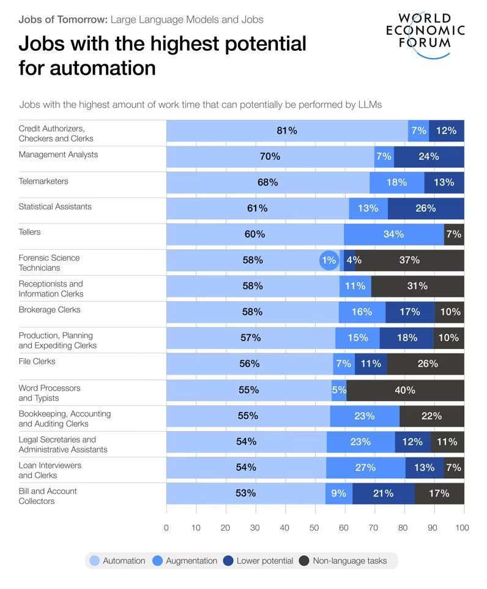

What makes a job AI-proof?
Written by Cyrus Varney, on 19/3/2026
A big concern for a lot of people looking to get into a career these days is the crushing threat of AI automation. It's a very realistic, scary thing that by 2030 or even sooner, we could be facing a crisis where thousands, maybe millions of people will be out of their jobs. It really does look impossible to get a job where you can't just be replaced with an AI model. It's sad, but that's the nature of progressing so quickly so soon.
AI is getting smarter with every passing version, and easier to access with things like OpenAI, ChatGPT and Sora. In fact, 49% of companies that use ChatGPT have reported replacing workers with it. But all hope isn't lost for young adults.
What can I do to stay safe from AI?
Now, there's a couple ways of keeping yourself safe, some more drastic than others. To simplify them down, you can either choose a career that is unlikely to be automated, or if you're already locked into something, you can take measures to protect yourself.
So, let's say you're fresh out of high school and looking for something to do, be it a job or college. In this case, you might want to review your options and make an informed decision about what you really want to do in the future.
Some of the safest careers to aim for would be medical, executive, infrastructure, and AI-technical professions. Out of all positions, these stand out the most as the safest, stable careers. Medical jobs are safe because of people not wanting their health to rely on AI, these would be things like nurses, physicians, and therapists.
Infrastructure or technical jobs are also very safe since AI, or more rather robots, can't do physical work nearly as well as humans can. AI technicians are turning out to be a new career path, simply demanding an extensive knowledge of AI models, which could be pretty lucrative, considering where the future may be headed. And of course, leadership figures are safe, as hardly any company will want to leave their managers and chiefs in favor of AI.
Now, let's say you aren't in that case. You're someone already deep in a line of work that you don't want to abandon for any number of reasons, and you're scared you'll lose it all to AI. Here's what you can do to keep yourself covered.
It's a simple process, all you have to do is go and review what your job is on a day to day basis. If it looks repetitive and simple, like desk work, you're at risk. However, something like the previous jobs I mentioned get changed and adapted a lot for any situation, so AI would struggle there. But if you're at risk of being replaced, here's what you need to do.
You have to try and advance. Could be a promotion, but those are rare, so let's say you just need to do really well. Show your employers that you can't be replaced, because you're better than the rest. Now, I know that's a little harsh, saying that the solution is to just do your job even better, but that's the reality of it. You make yourself useful or you get cut. Sad, but true.
Review of Best Career Paths
- Medical
- Physician
- Therapist
- Doctor
- Surgeon
- Nurse
- Technical
- Plumber
- Electrician
- Architect
- Construction Worker
- AI-based
- AI Repairman
- Programmer
- Executive
- Manager
- Chief Executive
- Owner

Closing
To close it out, I think fighting for your job against AI or trying to make your job a possibility at all, are both extremely hard challenges that come with this new age. We're in a time of rapidly-evolving technology, and even though it's miserable to have such pressure on you, it's undeniable and inevitable that you'll have to find your own way of getting by. We all have to, now.